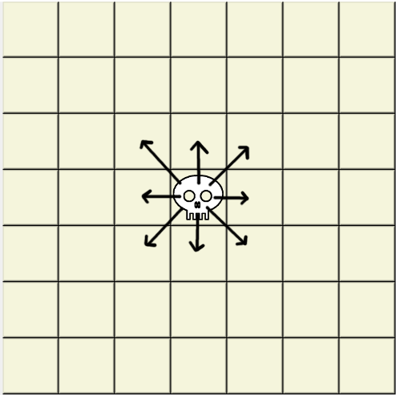
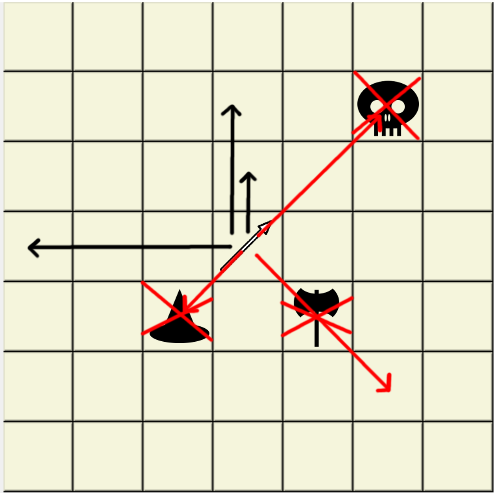

Weird Chess Rules
It's like chess, but with weird pieces. Your goal is to kill enemy necromancer. There is no check, checkmate, castling, en pasant or promoting.
Necromancer
Necromancer moves like chess king, but cannot kill. Whenever he moves, your longest dead piece is revived on necromancer's former position.

Swordsman
Swordsman moves by doing two orthogonal steps. Kills are performed by stepping next to enemy piece.

Spearman
Spearman moves orthogonaly and kills diagonaly one or two tiles.

Marksman
Marksman moves like chess king. Whenever he moves he kills unobscured enemy piece in opposite direction.

Berserk
Berserk moves and kills exactly two tiles orthogonaly. If he kills a piece, he can continue one tile forward, diagonaly or sideways in way he started. He can kill his allied pieces.

Guardian
Guardian moves and kills like chess king. He protects orthogonaly neighbouring pieces from being killed.

Mage
Mage teleports up to three orthogonal steps away. If he teleports on tile with any piece, they swap places.

Sapper and Mine
Sapper can go to any free tile. Whenever he moves, he leaves mine on his former position. If there is already a mine, it will be moved (there can be only one).
When mine is killed, it kills piece that killed it (except marksman). Mine can kill (but not move) one tile diagonaly.